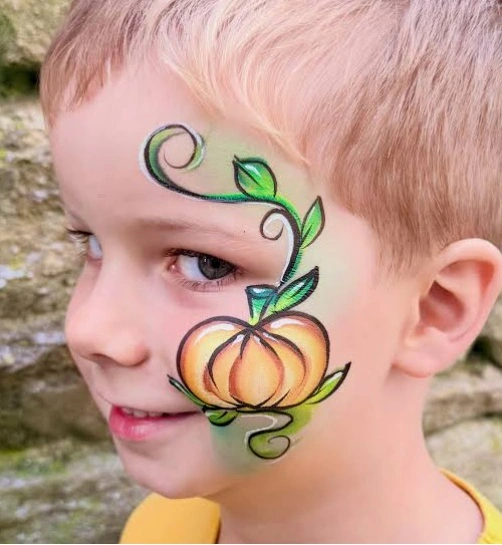
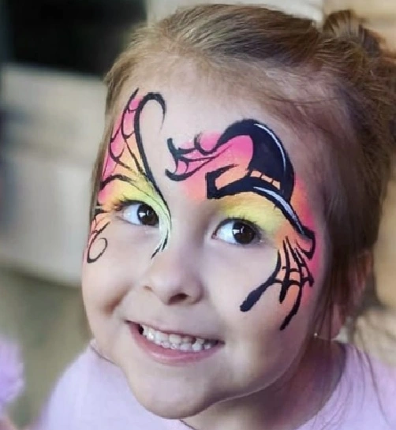
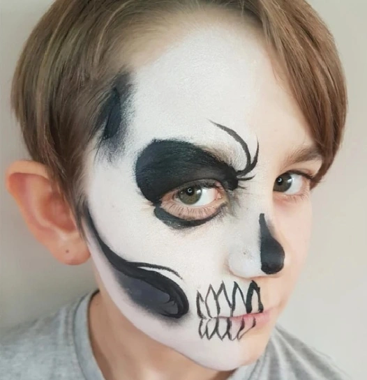
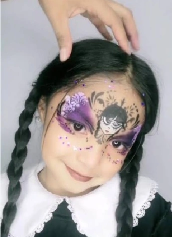

Vzpomínáte si na ty plastové masky z dětství, pod kterými se člověk dusil a nebylo přes ně vidět? Dnešní dětský Halloween vypadá úplně jinak! Stala se z něj oblíbená událost plná radosti, hravosti a hlavně kreativity, na kterou se děti těší celkem právem.
Proč děti Halloween tak zbožňují? Mohou se na chvíli proměnit v hrdiny svých příběhů, zažít trochu legrace se strašidelnou tematikou a ukázat svou vlastní fantazii – bez slz a strachu.
Nejoblíbenější dětské kostýmy a masky
Děti milují převleky, ve kterých mohou naplno projevit svou osobnost. Mezi absolutní hity na halloweenských oslavách patří:

🎃 Dýně
Veselá oranžová klasika, která k podzimu neodmyslitelně patří.

🧙♀️ Čarodějnice
Kouzelné čarodějky s jiskrou v oku, kloboukem a třpytkami.

💀 Kostlivec
Stylová černobílá kombinace pro malé nebojsy.

🖤 Addams Family
Temně elegantní holčičky stylizované do Wednesday s culíky.
Další masky, které u dětí bodují
- Roztomilý vlkodlak: Žádná zlá příšera, ale hravý vlčák, ze kterého budou všichni nadšení.
- Přátelský duch Casper: Jemné bílé tóny, hvězdičky a zářivé barvy, které na dětské párty rozzáří každého malého ducha.
Královna dětských masek: Sugar Skull
Mezi dětmi a malými slečnami naprosto vládne také motiv inspirovaný mexickým svátkem Día de los Muertos – **Sugar Skull** (cukrová lebka).
Proč ji děti milují? Zapomeňte na hrůzostrašné krváky. Sugar Skull je o barvách, květinách a třpytkách. Kombinuje jemný základ s pestrobarevnými okvětními lístky kolem očí a hravými ornamenty. Děti si připadají jako princezny z pohádkového podsvětí – originální, stylové a přitom okouzlující.
🎥 Podívejte se na video z tvorby!
Chcete vidět, jak taková proměna vzniká pod mými štětci? Mrkněte na mé krátké video přímo na Facebooku:
Sledovat video na Facebooku ↗Chcete pro děti nezapomenutelnou halloweenskou párty?
Moje barvy jsou bezpečné, hypoalergenní a šetrné k dětské pleti. Zarezervuj termín včas, ať mají děti na oslavě to nejlepší facepaintingové kouzlo!